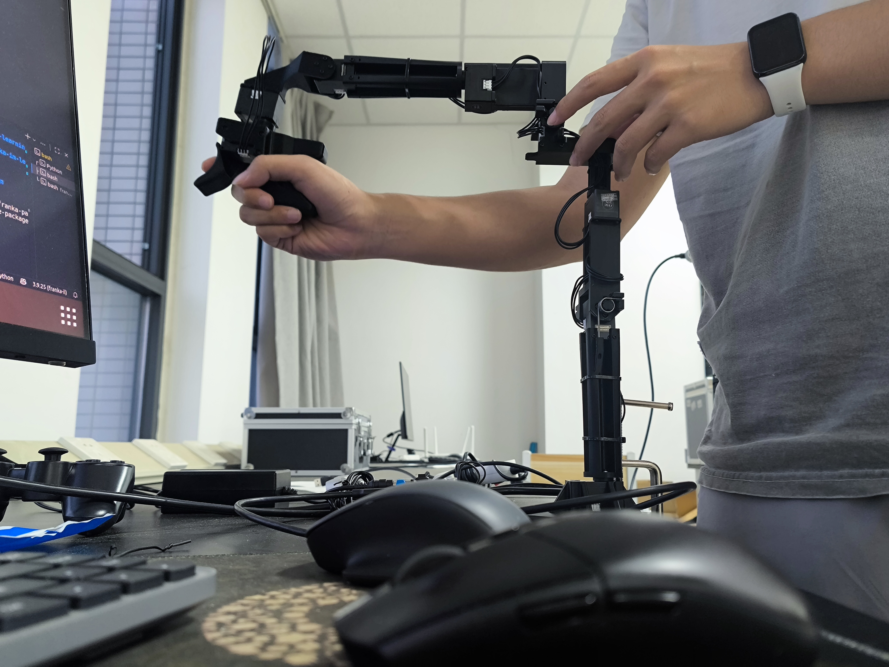

Franka Panda 与 GELLO 遥操作配置记录
一、前言
本文记录 Franka Panda 真机控制环境与 GELLO 遥操作硬件的软件配置过程，目的是为后续模仿学习、强化学习和真机实验保留一份可复现的操作笔记。当前实验平台以 Ubuntu 20.04 和 ROS Noetic 为基础，底层控制主要依赖 Franka 官方 FCI/libfranka，Python 侧通过 pybind11 封装自定义 C++ 控制接口。
目前的总体目标不是直接采用 GELLO 官方仓库中完整的 ROS2 或 Polymetis 路线，而是将 GELLO 作为一个关节空间遥操作输入设备：Python 读取 GELLO 上 Dynamixel 电机的关节角，再将目标关节位置传入已有的 Franka pybind11 控制模块，由 C++/libfranka 负责实时控制。
二、机械臂实验视频
视频一记录了连通实物 Franka Panda 进行控制与 GELLO 遥操作系统环境配置以及在 MuJoCo 中遥控 Franka 的过程。
三、Franka Panda 真机运行环境
Franka Panda 的真机运行需要先完成实时系统和底层控制库配置，具体可以参考官方文档。整体流程如下：
- 在 Ubuntu 20.04 系统上配置实时内核，以满足 Franka FCI 对控制周期稳定性的要求。具体参考官方的实时内核配置文档。
- 安装与机器人系统版本匹配的 libfranka，并确认 Robot Server、Gripper Server 与 libfranka 版本兼容。
- 通过 C++ 调用
<franka>相关接口，实现底层 1 kHz 实时控制回调。 - 基于 pybind11 对 C++ 控制器进行封装，使 Python 可以调用 Franka 控制接口。
- Python 侧只负责高层目标更新，例如设置目标关节位置、读取当前机器人状态，不直接参与 1 kHz 实时控制循环。
当前采用的思路是：C++ 侧维护实时控制线程，并在 libfranka 控制回调中读取最近一次 Python 更新的目标关节量；Python 侧通过接口调用更新 q_des，避免在 Python 中执行实时控制循环。
四、GELLO 硬件与软件
为了采集示教数据，使用 GELLO 开源低成本遥操作机械臂硬件。这里提供我自己购买的GELLO 开源机械臂淘宝链接，以及GELLO的开源软件仓库。
(1) 安装 GELLO 前的 Python 环境
本项目使用 Miniconda 创建 franka-il 虚拟环境，用于后续
libfranka 的 Python 绑定、GELLO 遥操作测试以及模仿学习相关程序开发。
conda create -n franka-il python=3.9 pip -y
conda activate franka-il
在安装 GELLO 相关依赖前，先导出当前环境配置，便于后续复现或回退（我之前环境还安装了 pybind11 一些其他的包，没具体写）：
conda env export > franka-il-before-gello.yml安装 GELLO 前，该环境的主要配置（可以运行franka机械臂的最小环境）记录如下：
| 项目 | 配置 |
|---|---|
| 环境名称 | franka-il |
| Python 版本 | 3.9.25 |
| 环境路径 | /home/franka-panda/miniconda3/envs/franka-il |
| 核心数值库 | numpy 2.0.2 |
| Python/C++ 绑定 | pybind11 3.0.3，pybind11-global 3.0.3 |
| 测试工具 | pytest 8.4.1 |
| 基础构建工具 | pip、setuptools、wheel |
(2) GELLO Python 包安装记录
参考 GELLO 软件开源仓库，下载源码并在 franka-il 环境中安装。
cd /home/franka-panda/wzl/franka-im-learning
git clone https://github.com/wuphilipp/gello_software.git
cd gello_software
下载源码后，补充第三方依赖。仓库中包含 DynamixelSDK 和 mujoco_menagerie 等子模块：
git submodule update --init --recursive随后安装 GELLO 所需的依赖，并安装 GELLO 包：
/home/franka-panda/miniconda3/envs/franka-il/bin/python -m pip install -r requirements.txt
/home/franka-panda/miniconda3/envs/franka-il/bin/python -m pip install third_party/DynamixelSDK/python
/home/franka-panda/miniconda3/envs/franka-il/bin/python -m pip install .这里对于我的环境和安装习惯来说，有两个问题：
首先，在 Python 3.9 的环境中，pin==3.7.0 存在版本问题，因此我在 requirements.txt 中将 pin==3.7.0 改为 pin==2.7.0，以及 dm_control 也存在版本问题，所以直接手动单独安装了相关包，在 requirements.txt 中将 dm_control 给注释了。单独安装的命令为：
/home/franka-panda/miniconda3/envs/franka-il/bin/python -m pip install mujoco==2.3.7
/home/franka-panda/miniconda3/envs/franka-il/bin/python -m pip install dm_control==1.0.14
其次，由于开源代码中作者使用的是 pip install -e . 进行的包安装。这里的 -e，即 editable install，该模式不会把源码完整复制到环境的 site-packages 中，而是在当前 Python 环境中建立到源码目录的引用，因此运行时仍然直接使用项目 /home/franka-panda/wzl/franka-im-learning/gello_software/gello/ 下的源码文件。然而，我个人不太喜欢软件包直接存在项目下，因此我使用 pip install . 进行安装，即将源码完整复制到环境中，那么我就可以对项目下的源码进行删除或修改等等操作。但是，在这份开源代码中存在一个问题，pip install . 安装会根据 setup.py 中的 setuptools.find_packages() 构建安装包，并把识别到的 Python package 复制到 site-packages。 该仓库中部分子目录如 gello/agents、gello/dynamixel、 gello/robots 缺少 __init__.py，导致普通安装时这些子模块没有被打包进去。 因此安装后 site-packages/gello/ 中只看到 driver.py， 导入时会出现 ModuleNotFoundError: No module named 'gello.agents' 这类找不到包的情况。
解决方法是在相关子目录中补充空的 __init__.py 文件，使其能够被
setuptools.find_packages() 正确识别，然后重新安装：
cd /home/franka-panda/wzl/franka-im-learning/gello_software
find gello -type d -exec touch {}/__init__.py \;
/home/franka-panda/miniconda3/envs/franka-il/bin/python -m pip uninstall -y gello
/home/franka-panda/miniconda3/envs/franka-il/bin/python -m pip install .也可以使用作者推荐的 editable 安装方式。该方式直接引用源码目录，因此不会暴露上述普通安装时的子模块缺失问题。
(3) 串口权限与 GELLO 读数测试
插入 GELLO 的 U2D2/USB 转串口后，系统识别到如下设备：
ls /dev/serial/by-id/
usb-FTDI_USB__-__Serial_Converter_FTC2NJ4R-if00-port0完整串口路径为：
/dev/serial/by-id/usb-FTDI_USB__-__Serial_Converter_FTC2NJ4R-if00-port0
首次打开串口时出现 Permission denied，需要将当前用户加入 dialout 组：
sudo usermod -aG dialout $USER
sudo reboot重启后确认用户组：
groups最后运行 GELLO 读数测试脚本：
cd /home/franka-panda/wzl/franka-im-learning
/home/franka-panda/miniconda3/envs/franka-il/bin/python test_gello_read.py
具体的测试脚本 test_gello_read.py 如下。该脚本以约 50 Hz 的频率读取 GELLO 当前关节角度，并在终端中打印。
import time
import numpy as np
from gello.agents.gello_agent import GelloAgent, DynamixelRobotConfig
PORT = "/dev/serial/by-id/usb-FTDI_USB__-__Serial_Converter_FTC2NJ4R-if00-port0"
config = DynamixelRobotConfig(
joint_ids=(1, 2, 3, 4, 5, 6, 7),
joint_offsets=(0, 0, 0, 0, 0, 0, 0),
joint_signs=(1, 1, 1, 1, 1, -1, 1),
gripper_config=None,
)
agent = GelloAgent(
port=PORT,
dynamixel_config=config,
start_joints=None,
)
while True:
q = agent.act({})
print(np.round(q, 3))
time.sleep(0.02)运行该脚本后，终端能够持续刷新关节角度；手动转动 GELLO 关节时，对应数值同步变化，说明 Dynamixel 通信和 Python 读数流程已经基本跑通。
五、GELLO 遥操作 MuJoCo 中 Franka Panda 的配置与调试
为确保安全，以及摸清楚 GELLO 遥操作相关的流程和原理，我先基于 gello_software 中提供的 MuJoCo 环境测试遥操作过程。实验过程如第二章中的视频一所示。MuJoCo 仿真模型使用 开源库 mujoco_menagerie 中的 Franka Panda 模型。由于完整的 mujoco_menagerie 仓库较大，因此仅下载使用 Franka Panda 相关目录 mujoco_menagerie/franka_emika_panda。
(1) MuJoCo Panda 仿真
为快速地在 MuJoCo 仿真环境中进行遥操作测试，这里我直接使用 gello_software/experiments 下开源的代码。GELLO 遥操作 MuJoCo 中 Franka Panda 的过程并不是单个脚本直接完成，而是由两个主要进程 gello_software/experiments/launch_nodes.py 和 gello_software/experiments/run_env.py 协同工作。
第一个进程 launch_nodes.py 负责维护机器人对象。对于当前任务，它加载 MuJoCo 中的 Franka Panda 模型，启动 MuJoCo viewer，并持续推进仿真物理世界。同时，它还启动一个 ZMQ server，对外提供机器人接口，例如读取关节状态、接收关节命令、返回观测信息等。
第二个进程 run_env.py 负责控制逻辑。它通过 ZMQ client 连接到第一个进程中的机器人服务端，然后创建控制环境 RobotEnv 和控制器 Agent。当使用 GELLO 遥操作时，Agent 就是 GelloAgent，负责从 GELLO 的 Dynamixel 电机读取当前关节角，并将其转换成 Panda 的目标关节角。
为了方便，我直接 copy 到了我自己项目下进行使用和修改。使用两个终端分别启动进程即可：
cd /home/franka-panda/wzl/franka-im-learning
/home/franka-panda/miniconda3/envs/franka-il/bin/python /home/franka-panda/wzl/franka-im-learning/launch_nodes.py --robot sim_pandacd /home/franka-panda/wzl/franka-im-learning
/home/franka-panda/miniconda3/envs/franka-il/bin/python /home/franka-panda/wzl/franka-im-learning/run_env.py --agent gello --gello-port /dev/serial/by-id/usb-FTDI_USB__-__Serial_Converter_FTC2NJ4R-if00-port0 --start-joints 0 0 0 -1.57 0 1.57 0 0 --hz 50(2) 注意事项
首先，开源代码 gello_agent.py 中缺少 franka panda 的配置，需要自己添加进去。如果在安装 gello 包的时候是 pip install . 进行安装的，到相关环境中进行更改，如我的是 /home/franka-panda/miniconda3/envs/franka-il/lib/python3.9/site-packages/gello/agents/gello_agent.py ；如果是 pip install -e . 进行安装的，直接下载源码中进行修改就行。具体是在 # Right UR 后面添加这段：
# franka-panda
"/dev/serial/by-id/usb-FTDI_USB__-__Serial_Converter_FTC2NJ4R-if00-port0": DynamixelRobotConfig(
joint_ids=(1, 2, 3, 4, 5, 6, 7),
joint_offsets=(
0 * np.pi,
np.pi,
np.pi,
np.pi,
np.pi,
np.pi,
np.pi,
),
joint_signs=(1, 1, 1, 1, 1, -1, 1),
gripper_config=(8, 200.981640625, 159.181640625),
),
其次，添加的具体 joint_offsets 数据需要在初始构型下进行标定：
/home/franka-panda/miniconda3/envs/franka-il/bin/python /home/franka-panda/wzl/franka-im-learning/gello_get_offset.py --start-joints 0 0 0 -1.57 0 1.57 0 --joint-signs 1 1 1 1 1 -1 1 --port /dev/serial/by-id/usb-FTDI_USB__-__Serial_Converter_FTC2NJ4R-if00-port0
将输出的数据填入 # franka-panda 的配置中。
Attempting to initialize Dynamixel driver (attempt 1/3)
Successfully initialized Dynamixel driver on /dev/serial/by-id/usb-FTDI_USB__-__Serial_Converter_FTC2NJ4R-if00-port0
best offsets : ['0.000', '3.142', '3.142', '3.142', '3.142', '3.142', '3.142']
best offsets function of pi: [0*np.pi/2, 2*np.pi/2, 2*np.pi/2, 2*np.pi/2, 2*np.pi/2, 2*np.pi/2, 2*np.pi/2 ]
gripper open (degrees) 201.333203125
gripper close (degrees) 159.533203125下图是我标定的初始构型，应该是这样吧...！
